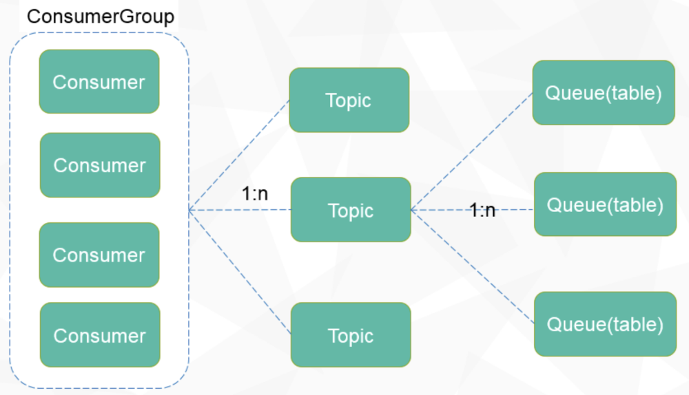

整体设计 #
小提示：如果你不是很了解分布式队列系统，了解整体设计之前，可以先阅读一下quick start模块，动手实现一个队列 demo，会有助于你更好的了解整体的设计
1. 消息模型 #
消息的整体模型主要涉及到三个模块
-
ConsumerGroup表示一些topic的集合，是 CatMQ组织和协调消费者们的一种机制，会被一组消费者订阅，这组消费者会共同消费这个消费者组下面的 topic。
-
TopicTopic 是 CatMQ中的消息主题，是一种逻辑概念用来组织和分类消息，没个消息都属于一个特定的主题，而消费者们也会通过订阅这些 topic来接受对应的消息。
-
QueueQueue 是 CatMQ 中存储消息的容器，在 CatMQ 中被设计为一张 MySQL的数据表，每个主题可以有多个 Queue, 可以类比为 Kafka 中的partition.
三种之间的关系如下图所示{width=“6.6851859142607175in” height=“3.8367104111986in”}
2. 架构模块 #
架构模块如下图所示，图中各个模块的说明如下 {width=“6.8518525809273845in”
height=“3.8025754593175853in”}
{width=“6.8518525809273845in”
height=“3.8025754593175853in”}
-
Broker
CatMQ的服务端，主要负责消息的投递，拉取和查询，保证消息的高可用。核心功能如下 a. 提供消息发送接口b. 提供消息拉取接口
c. 提供队列和消费者组的动态重平衡
d. 元数据的同步
e. 提供消费偏移的同步
-
Portal
CatMQ的管理界面，主要提供一个CatMQ的可视化管理后台以及作为NameServer,做到Broker 和路由的管理。核心功能如下：a. ConsumerGroup,topic,Queue的可视化创建和修改
b. 管理订阅关系
c. 支持消息查询
d. 各种审计日志和权限控制
e. 各种监控报表
f. 一些监控系统稳定性的定时器
-
Producers/Consumers
CatMQ的生产者/消费者，同属于CatMQ客户端下面，核心功能有a. 消息同步和异步发送
b. 消息拉去和消费
c. 客户端的心跳和偏移的提交
d. 失败消息重试和发送
-
Metadata
CatMQ的元数据库，用来记录CatMQ所需要的配置信息，核心功能有：a. 储存consumerGroup,topic 以及订阅关系
b. 储存数据库的节点信息
c. 储存Queue,topic,的分配关系
d. 储存消息偏移
-
Message
CatMQ的消息数据库，用来持久化所有的消息
3. E-R图 #
-
DbNode: 记录存储消息的数据库的节点信息，包括 jdbcurl , 用户名，密码
-
Consumer：当前系统活跃的消费者
-
Queue: 记录 topic 和队列表的实际分配的信息
-
QueueOffset: 记录 consumer 和 Queue 的实际对应关系，并且记录他们的消费偏移，（记录某个消费者消费某条 queue的信息）
-
Topic: 多个 Queue, 用来存储消息
-
ConsumerGroup: topic的集合，用来记录系统中的 consumerGroup
-
ConsumerGroupConsumer: 用来记录系统中的 Consuemr 和 ConsumerGroup 对应的关系
-
ConsumerGroupTopic: 用来记录 ConsumerGroup 和 Topic 对应的关系
 {width=“5.0in”
height=“3.7in”}
{width=“5.0in”
height=“3.7in”}